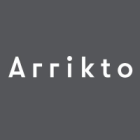
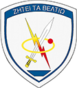

August 2016 - Present
Software engineer
Working as software engineer, developing the next generation of
software intelligence.

November 2015 - August 2016
Software engineer
Served my compulsory time in the Greek Army developing and
maintaining software in Java, upgrading and optimizing
the existent infrastructure.
May 2015 - July 2015
Advantis Medical Imaging (former TomoTECH)
Software engineer
Developed a web-based medical platform that included:
3D rendering of brain fibers and a
drawing tool in HTML canvas using ThreeJS,
tomograph image manipulation,
basic user system with control panel.
October 2013 - February 2014
reembed.com
Software engineer
Stayed for about four months, developing both front-end and back-end
software. I contributed by coding in PHP, cakePHP, HTML, CSS,
Javascript, jQuery. I learned how to work with Git for version control,
and gained a powerful experience on it. It was a very pleasant and
teaching experience, having the chance to collaborate with some
brilliant people and create a solid product together. Reembed.com
serves millions of videos every day, so I feel glad that
my work is discoverable.